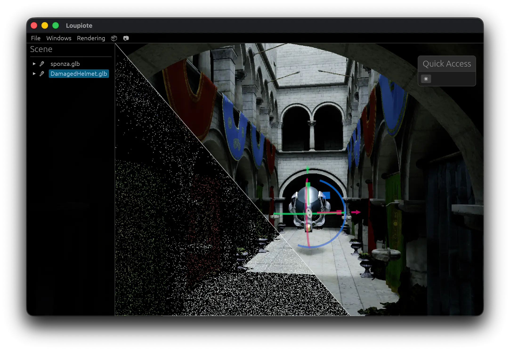
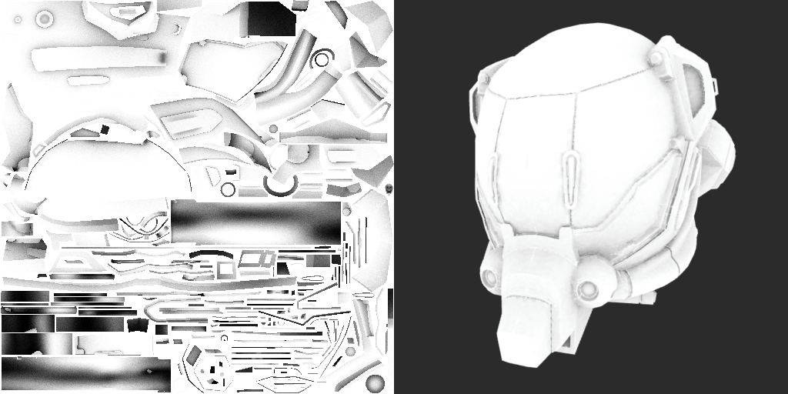

Albedo
Albedo is a work-in-progress raytracing ecosystem written in Rust and leveraging wgpu native and WebGPU.
- Runs everywhere: Chrome/Firefox/Safari and native
- No RT cores / vendor-specific raytracing hardware required
Originally open sourced on GitHub, the project is being continued as closed source for the time being.
Runtime
Real-time path tracing runtime, running natively or the web. Try it:
Works on Firefox, Safari, and Chromium browsers.
Prefer Firefox or Canary, as Chrome and Safari suffer performance issues.
Nitty-gritty details:
- Zero-copy file format
- Custom dynamic data-oriented scene format
- Not a general-purpose ECS
- GPU-driven rendering
Editor
Native application used to package scenes for use with the runtime.

While still minimalistic, it is built around the concept that processing files and packaging should be threaded, fast, and painless.
Editor image compression during asset import
Packaging a scene is typically in the milliseconds range
Libraries
While the demo showcases real-time path tracing and screen-space denoising, the ecosystem exposes:
- Intersection, shading, and denoising kernels
- Bindless-style textures and materials management
Use Cases
- Baking GI (probes, lightmaps)
- Baking ambient occlusion

- Real-time ambient occlusion
- Real-time shadows
- GPU Picking
Albedo low-level raytracing library used for GPU picking
Interested?
If this project peaked your interest, please reach out to me on socials: